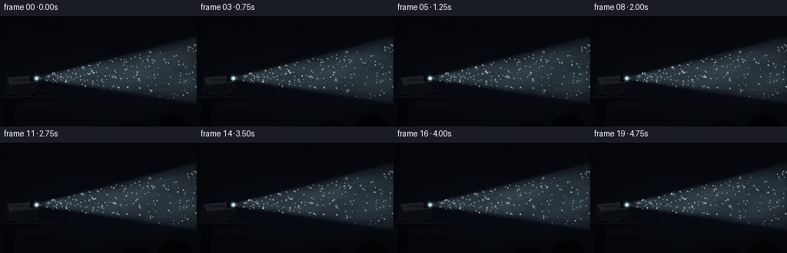
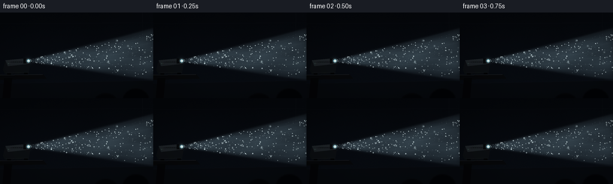
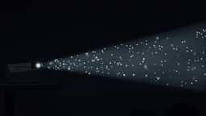
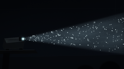

CODING AGENTS AS PIXEL WORLD MODELS
traex/GPT-5.6-Sol · phygen_055
点击播放 · 原生 RGB 像素
逐轮保存的候选
回放视频、检查图与代码变化。
每份候选均可单独播放。实际图片检查记录在下方工具轨迹中。
候选 01播放与检查图
点击播放 · 原生 RGB 像素


展开代码变化
--- 上一保存版本
+++ 本次保存版本
@@ -0,0 +1,261 @@
+from pathlib import Path
+import math
+import numpy as np
+from PIL import Image, ImageDraw, ImageFilter
+import artifact_io
+
+# Deterministic procedural rendering; no external assets.
+W, H, N, FPS = 256, 144, 20, 4.0
+SS = 3
+RW, RH = W * SS, H * SS
+rng = np.random.default_rng(55019)
+
+# Pixel grids in final-pixel coordinates, rendered supersampled.
+yy, xx = np.mgrid[0:RH, 0:RW].astype(np.float32)
+x = xx / SS
+y = yy / SS
+
+# Soft, static atmospheric structure. Large-scale noise is deliberately subtle.
+small = rng.normal(0, 1, (24, 43)).astype(np.float32)
+noise_img = Image.fromarray(np.uint8(np.clip((small + 3) * 38, 0, 255))).resize(
+ (RW, RH), Image.Resampling.BICUBIC).filter(ImageFilter.GaussianBlur(10 * SS))
+large_noise = np.asarray(noise_img, dtype=np.float32) / 38.0 - 3.0
+fine_noise = rng.normal(0, 1, (RH, RW)).astype(np.float32)
+
+# Particle population in beam coordinates. q is position between top and bottom rays.
+P = 430
+p_x = rng.uniform(49, 263, P)
+p_q = rng.uniform(0.035, 0.965, P)
+p_size = np.exp(rng.uniform(np.log(0.20), np.log(0.95), P))
+p_depth = rng.random(P)
+p_phase = rng.uniform(0, 2 * np.pi, P)
+p_vx = rng.uniform(-0.35, 0.42, P)
+p_vq = rng.normal(0.0, 0.0027, P)
+p_bright = rng.uniform(0.35, 1.0, P) ** 1.7
+# A small number of near-camera motes become soft round bokeh.
+near_ids = rng.choice(P, 15, replace=False)
+p_size[near_ids] = rng.uniform(1.15, 2.6, len(near_ids))
+p_bright[near_ids] *= 0.58
+
+
+def bounds(px):
+ """Upper/lower edge of the projector cone at x coordinate(s)."""
+ d = np.asarray(px) - 47.0
+ return 79.0 - 0.252 * d, 83.0 + 0.148 * d
+
+
+def sigmoid(z):
+ return 1.0 / (1.0 + np.exp(-np.clip(z, -20, 20)))
+
+
+def alpha_over(base, layer):
+ """Alpha-composite uint8 RGBA PIL layer over float RGB base."""
+ a = np.asarray(layer, dtype=np.float32)
+ al = a[..., 3:4] / 255.0
+ return base * (1.0 - al) + a[..., :3] * al
+
+
+def sc(v):
+ return int(round(v * SS))
+
+
+def static_room(t):
+ # Dark blue-black room, with a weak wall/floor gradient and filmic texture.
+ vgrad = np.clip((y - 16) / 128, 0, 1)
+ rgrad = np.clip((x - 160) / 96, 0, 1)
+ base = np.zeros((RH, RW, 3), np.float32)
+ base[..., 0] = 4.8 + 3.5 * vgrad + 1.3 * rgrad
+ base[..., 1] = 7.2 + 5.0 * vgrad + 2.0 * rgrad
+ base[..., 2] = 11.2 + 7.5 * vgrad + 3.2 * rgrad
+ # Very subdued texture makes the darkness feel photographic rather than flat.
+ grain = 0.50 * fine_noise + 0.44 * large_noise
+ base += grain[..., None]
+
+ # Architectural shadows: ceiling seam, distant wall panels, and floor.
+ room = Image.new('RGBA', (RW, RH), (0, 0, 0, 0))
+ d = ImageDraw.Draw(room)
+ d.line([(0, sc(19)), (RW, sc(17))], fill=(24, 29, 36, 42), width=sc(1))
+ d.line([(sc(238), 0), (sc(239), RH)], fill=(42, 48, 55, 24), width=sc(1))
+ d.line([(sc(239), sc(18)), (sc(239), sc(130))], fill=(4, 7, 11, 80), width=sc(1))
+ # Back wall and floor plane barely registering in the dark.
+ d.polygon([(0, sc(119)), (RW, sc(114)), (RW, RH), (0, RH)], fill=(6, 8, 11, 150))
+ d.line([(0, sc(119)), (RW, sc(114))], fill=(30, 33, 36, 26), width=sc(1))
+ return alpha_over(base, room)
+
+
+def add_beam(img, frame):
+ t = frame / FPS
+ top, bot = bounds(x)
+ # Smooth physically plausible cone coverage, including a softened lens mouth.
+ edge_soft = 0.85
+ cone = sigmoid((y - top) / edge_soft) * sigmoid((bot - y) / edge_soft)
+ cone *= sigmoid((x - 47.3) / 1.15)
+ cone *= sigmoid((258.5 - x) / 2.5)
+ d = np.maximum(x - 47.0, 0)
+ q = np.clip((y - top) / np.maximum(bot - top, 1), 0, 1)
+ center = np.exp(-((q - 0.50) / 0.48) ** 4)
+
+ # Gentle optical flutter and smoke-density variations; no wholesale brightness jump.
+ pulse = 0.985 + 0.015 * math.sin(2 * math.pi * (0.48 * t + 0.13))
+ wisps = (0.90 + 0.075 * np.sin(0.069 * x + 0.105 * y + 0.48 * t)
+ + 0.045 * np.sin(0.034 * x - 0.23 * y - 0.31 * t)
+ + 0.030 * large_noise)
+ # Volumetric scattering grows just after the lens and remains visible across the room.
+ reach = (1.0 - np.exp(-d / 14.0)) * (0.92 - 0.10 * d / 215.0)
+ alpha = np.clip(cone * center * reach * wisps * pulse * 0.41, 0, 0.53)
+ beam_color = np.empty_like(img)
+ beam_color[..., 0] = 127 + 8 * (1 - q)
+ beam_color[..., 1] = 161 + 8 * (1 - q)
+ beam_color[..., 2] = 177 + 10 * (1 - q)
+ img = img * (1 - alpha[..., None]) + beam_color * alpha[..., None]
+
+ # Several extremely subtle internal shafts, as real lenses make in dusty air.
+ streak = (0.5 + 0.5 * np.sin(q * 46.0 + 0.031 * x + 0.2 * math.sin(t))) ** 7
+ sa = cone * reach * streak * 0.026
+ shaft_color = np.array([175, 202, 211], np.float32)
+ img = img * (1 - sa[..., None]) + shaft_color * sa[..., None]
+
+ # Thin bright boundary rays are softly blurred instead of looking vector-sharp.
+ ray = Image.new('RGBA', (RW, RH), (0, 0, 0, 0))
+ rd = ImageDraw.Draw(ray)
+ shimmer = int(33 + 4 * math.sin(t * 1.7))
+ rd.line([(sc(47), sc(79.6)), (RW, sc(bounds(256)[0]))],
+ fill=(180, 211, 220, shimmer), width=max(1, sc(.42)))
+ rd.line([(sc(47), sc(82.2)), (RW, sc(bounds(256)[1]))],
+ fill=(150, 190, 203, 23), width=max(1, sc(.35)))
+ ray = ray.filter(ImageFilter.GaussianBlur(sc(.45)))
+ return alpha_over(img, ray)
+
+
+def add_particles(img, frame):
+ t = frame / FPS
+ # Motion is slow and irregular, like airborne dust in weak convection.
+ px = 47.0 + np.mod((p_x - 47.0) + p_vx * t + 0.32 * np.sin(p_phase + 0.7*t), 216.0)
+ qq = np.mod(p_q + p_vq * t + 0.0048 * np.sin(p_phase * 1.7 + 0.52*t), 1.0)
+ tp, bp = bounds(px)
+ py = tp + qq * (bp - tp) + 0.34 * np.sin(p_phase + 0.31*t)
+ twinkle = 0.55 + 0.45 * (0.5 + 0.5 * np.sin(p_phase * 2.1 + t * (1.1 + p_depth)))
+ # Motes near cone edges are dimmer due to lower irradiance.
+ edge = np.clip(np.minimum(qq, 1 - qq) / 0.12, 0, 1)
+ intens = p_bright * twinkle * (0.35 + 0.65 * edge)
+
+ sharp = Image.new('RGBA', (RW, RH), (0, 0, 0, 0))
+ sd = ImageDraw.Draw(sharp)
+ glow = Image.new('RGBA', (RW, RH), (0, 0, 0, 0))
+ gd = ImageDraw.Draw(glow)
+ near_set = set(int(i) for i in near_ids)
+ for i in range(P):
+ if not (47 <= px[i] < 256 and 0 <= py[i] < 144):
+ continue
+ b = float(intens[i])
+ cx, cy = sc(px[i]), sc(py[i])
+ radius = float(p_size[i])
+ if i in near_set:
+ rr = sc(radius)
+ col = (195, 222, 229, int(38 + 80*b))
+ gd.ellipse([cx-rr, cy-rr, cx+rr, cy+rr], fill=col)
+ # Defined center gives the blurred mote a believable highlight.
+ cr = max(1, sc(radius * .23))
+ sd.ellipse([cx-cr, cy-cr, cx+cr, cy+cr], fill=(220, 238, 240, int(55+105*b)))
+ else:
+ rr = max(1, sc(radius))
+ a = int(np.clip(70 + 175*b, 45, 242))
+ # A fraction catches enough light for a minute halo.
+ if b > .66 and radius > .40:
+ gr = max(sc(.8), rr * 2)
+ gd.ellipse([cx-gr, cy-gr, cx+gr, cy+gr], fill=(176, 211, 220, int(18+30*b)))
+ if radius < .36:
+ sd.point((cx, cy), fill=(222, 237, 239, a))
+ if SS >= 3 and a > 150:
+ sd.point((cx+1, cy), fill=(204, 226, 231, a//2))
+ else:
+ sd.ellipse([cx-rr, cy-rr, cx+rr, cy+rr], fill=(218, 235, 238, a))
+ glow = glow.filter(ImageFilter.GaussianBlur(sc(1.0)))
+ img = alpha_over(img, glow)
+ return alpha_over(img, sharp)
+
+
+def add_projector_and_foreground(img, frame):
+ t = frame / FPS
+ # Soft lens flare behind the actual projector housing.
+ halo = Image.new('RGBA', (RW, RH), (0, 0, 0, 0))
+ hd = ImageDraw.Draw(halo)
+ for rad, a in [(8.5, 14), (5.0, 24), (2.7, 48)]:
+ hd.ellipse([sc(47-rad), sc(81-rad), sc(47+rad), sc(81+rad)],
+ fill=(142, 194, 210, a))
+ halo = halo.filter(ImageFilter.GaussianBlur(sc(3.2)))
+ img = alpha_over(img, halo)
+
+ fg = Image.new('RGBA', (RW, RH), (0, 0, 0, 0))
+ d = ImageDraw.Draw(fg)
+ # Furniture: thick table edge and one support, mostly silhouette.
+ d.polygon([(0, sc(105)), (sc(72), sc(104)), (sc(78), sc(111)), (0, sc(113))],
+ fill=(7, 8, 10, 255))
+ d.line([(0, sc(105)), (sc(71), sc(104))], fill=(37, 40, 42, 180), width=sc(1))
+ d.polygon([(sc(7), sc(110)), (sc(20), sc(110)), (sc(17), RH), (sc(4), RH)],
+ fill=(4, 5, 7, 255))
+ # Projector body: low trapezoid, readable controls/vents, metal edge highlights.
+ d.polygon([(sc(9), sc(80)), (sc(42), sc(77)), (sc(50), sc(87)),
+ (sc(48), sc(102)), (sc(8), sc(103)), (sc(5), sc(96))],
+ fill=(12, 15, 18, 255))
+ d.polygon([(sc(9), sc(80)), (sc(42), sc(77)), (sc(49), sc(86)), (sc(13), sc(90))],
+ fill=(29, 34, 38, 255))
+ d.line([(sc(10), sc(80)), (sc(42), sc(78)), (sc(48), sc(85))],
+ fill=(70, 77, 80, 110), width=sc(.7))
+ d.line([(sc(10), sc(101)), (sc(47), sc(100))], fill=(38, 43, 45, 130), width=sc(.6))
+ # Vent grille on top.
+ for j in range(7):
+ x0 = 16.0 + j * 3.15
+ d.line([(sc(x0), sc(83.2)), (sc(x0+7.5), sc(82.6))],
+ fill=(5, 7, 9, 210), width=max(1, sc(.45)))
+ # Control lights/buttons.
+ d.ellipse([sc(13.2), sc(85.0), sc(14.5), sc(86.2)], fill=(64, 88, 82, 180))
+ d.ellipse([sc(16.1), sc(84.8), sc(17.0), sc(85.7)], fill=(45, 49, 50, 220))
+ # Cylindrical lens barrel and luminous glass.
+ d.polygon([(sc(39), sc(76.8)), (sc(47.2), sc(77.7)), (sc(50.7), sc(81.0)),
+ (sc(47.2), sc(85.0)), (sc(39), sc(85.6))], fill=(7, 9, 11, 255))
+ d.ellipse([sc(43.0), sc(76.8), sc(51.3), sc(85.2)], fill=(12, 18, 21, 255),
+ outline=(75, 88, 91, 210), width=sc(.7))
+ pulse = 0.5 + 0.5*math.sin(t*2.7)
+ d.ellipse([sc(44.3), sc(78.0), sc(50.4), sc(84.0)],
+ fill=(105, 167, 185, int(220 + 18*pulse)))
+ d.ellipse([sc(45.5), sc(79.0), sc(49.8), sc(83.2)],
+ fill=(205, 232, 234, int(225 + 20*pulse)))
+ d.ellipse([sc(46.3), sc(79.6), sc(48.6), sc(81.7)], fill=(244, 250, 244, 255))
+ # Tiny rubber feet.
+ d.rectangle([sc(12), sc(102), sc(18), sc(104.2)], fill=(3, 4, 5, 255))
+ d.rectangle([sc(40), sc(101), sc(46), sc(103.2)], fill=(3, 4, 5, 255))
+ img = alpha_over(img, fg)
+
+ # Very dark out-of-focus chair backs at bottom right create depth without distraction.
+ chair = Image.new('RGBA', (RW, RH), (0, 0, 0, 0))
+ cd = ImageDraw.Draw(chair)
+ cd.ellipse([sc(205), sc(128), sc(249), sc(168)], fill=(2, 3, 5, 245))
+ cd.ellipse([sc(157), sc(136), sc(196), sc(166)], fill=(3, 4, 6, 230))
+ chair = chair.filter(ImageFilter.GaussianBlur(sc(1.1)))
+ return alpha_over(img, chair)
+
+
+def render_frame(frame):
+ img = static_room(frame / FPS)
+ img = add_beam(img, frame)
+ img = add_particles(img, frame)
+ img = add_projector_and_foreground(img, frame)
+
+ # Mild vignette and final photographic tone curve.
+ nx = (x - W/2) / (W/2)
+ ny = (y - H/2) / (H/2)
+ vig = np.clip(1.0 - 0.17 * (nx*nx + ny*ny), 0.76, 1.0)
+ img *= vig[..., None]
+ img = np.clip(img, 0, 255)
+ out = Image.fromarray(img.astype(np.uint8), 'RGB').resize((W, H), Image.Resampling.LANCZOS)
+ return np.asarray(out, dtype=np.uint8)
+
+
+def main():
+ frames = np.stack([render_frame(i) for i in range(N)], axis=0)
+ artifact_io.save(frames, Path(__file__).resolve().parent)
+
+
+if __name__ == '__main__':
+ main()
可观测工具轨迹
实际执行的命令与返回图片。
命令 1exit 0
/bin/bash -lc 'cat prompt.txt'
命令 2exit 0
/bin/bash -lc 'cat GENERATION_RULES.md'
命令 3exit 0
/bin/bash -lc "cat task_spec.json && printf '\\n---FILES---\\n' && find . -maxdepth 2 -type f -printf '%p\\n' | sort"
命令 4exit 0
/bin/bash -lc 'cat artifact_io.py'
命令 5exit 0
/bin/bash -lc "cat > generate.py <<'PY'
from pathlib import Path
import math
import numpy as np
from PIL import Image, ImageDraw, ImageFilter
import artifact_io
# Deterministic procedural rendering; no external assets.
W, H, N, FPS = 256, 144, 20, 4.0
SS = 3
RW, RH = W * SS, H * SS
rng = np.random.default_rng(55019)
# Pixel grids in final-pixel coordinates, rendered supersampled.
yy, xx = np.mgrid[0:RH, 0:RW].astype(np.float32)
x = xx / SS
y = yy / SS
# Soft, static atmospheric structure. Large-scale noise is deliberately subtle.
small = rng.normal(0, 1, (24, 43)).astype(np.float32)
noise_img = Image.fromarray(np.uint8(np.clip((small + 3) * 38, 0, 255))).resize(
(RW, RH), Image.Resampling.BICUBIC).filter(ImageFilter.GaussianBlur(10 * SS))
large_noise = np.asarray(noise_img, dtype=np.float32) / 38.0 - 3.0
fine_noise = rng.normal(0, 1, (RH, RW)).astype(np.float32)
# Particle population in beam coordinates. q is position between top and bottom rays.
P = 430
p_x = rng.uniform(49, 263, P)
p_q = rng.uniform(0.035, 0.965, P)
p_size = np.exp(rng.uniform(np.log(0.20), np.log(0.95), P))
p_depth = rng.random(P)
p_phase = rng.uniform(0, 2 * np.pi, P)
p_vx = rng.uniform(-0.35, 0.42, P)
p_vq = rng.normal(0.0, 0.0027, P)
p_bright = rng.uniform(0.35, 1.0, P) ** 1.7
# A small number of near-camera motes become soft round bokeh.
near_ids = rng.choice(P, 15, replace=False)
p_size[near_ids] = rng.uniform(1.15, 2.6, len(near_ids))
p_bright[near_ids] *= 0.58
def bounds(px):
\"\"\"Upper/lower edge of the projector cone at x coordinate(s).\"\"\"
d = np.asarray(px) - 47.0
return 79.0 - 0.252 * d, 83.0 + 0.148 * d
def sigmoid(z):
return 1.0 / (1.0 + np.exp(-np.clip(z, -20, 20)))
def alpha_over(base, layer):
\"\"\"Alpha-composite uint8 RGBA PIL layer over float RGB base.\"\"\"
a = np.asarray(layer, dtype=np.float32)
al = a[..., 3:4] / 255.0
return base * (1.0 - al) + a[..., :3] * al
def sc(v):
return int(round(v * SS))
def static_room(t):
# Dark blue-black room, with a weak wall/floor gradient and filmic texture.
vgrad = np.clip((y - 16) / 128, 0, 1)
rgrad = np.clip((x - 160) / 96, 0, 1)
base = np.zeros((RH, RW, 3), np.float32)
base[..., 0] = 4.8 + 3.5 * vgrad + 1.3 * rgrad
base[..., 1] = 7.2 + 5.0 * vgrad + 2.0 * rgrad
base[..., 2] = 11.2 + 7.5 * vgrad + 3.2 * rgrad
# Very subdued texture makes the darkness feel photographic rather than flat.
grain = 0.50 * fine_noise + 0.44 * large_noise
base += grain[..., None]
# Architectural shadows: ceiling seam, distant wall panels, and floor.
room = Image.new('RGBA', (RW, RH), (0, 0, 0, 0))
d = ImageDraw.Draw(room)
d.line([(0, sc(19)), (RW, sc(17))], fill=(24, 29, 36, 42), width=sc(1))
d.line([(sc(238), 0), (sc(239), RH)], fill=(42, 48, 55, 24), width=sc(1))
d.line([(sc(239), sc(18)), (sc(239), sc(130))], fill=(4, 7, 11, 80), width=sc(1))
# Back wall and floor plane barely registering in the dark.
d.polygon([(0, sc(119)), (RW, sc(114)), (RW, RH), (0, RH)], fill=(6, 8, 11, 150))
d.line([(0, sc(119)), (RW, sc(114))], fill=(30, 33, 36, 26), width=sc(1))
return alpha_over(base, room)
def add_beam(img, frame):
t = frame / FPS
top, bot = bounds(x)
# Smooth physically plausible cone coverage, including a softened lens mouth.
edge_soft = 0.85
cone = sigmoid((y - top) / edge_soft) * sigmoid((bot - y) / edge_soft)
cone *= sigmoid((x - 47.3) / 1.15)
cone *= sigmoid((258.5 - x) / 2.5)
d = np.maximum(x - 47.0, 0)
q = np.clip((y - top) / np.maximum(bot - top, 1), 0, 1)
center = np.exp(-((q - 0.50) / 0.48) ** 4)
# Gentle optical flutter and smoke-density variations; no wholesale brightness jump.
pulse = 0.985 + 0.015 * math.sin(2 * math.pi * (0.48 * t + 0.13))
wisps = (0.90 + 0.075 * np.sin(0.069 * x + 0.105 * y + 0.48 * t)
+ 0.045 * np.sin(0.034 * x - 0.23 * y - 0.31 * t)
+ 0.030 * large_noise)
# Volumetric scattering grows just after the lens and remains visible across the room.
reach = (1.0 - np.exp(-d / 14.0)) * (0.92 - 0.10 * d / 215.0)
alpha = np.clip(cone * center * reach * wisps * pulse * 0.41, 0, 0.53)
beam_color = np.empty_like(img)
beam_color[..., 0] = 127 + 8 * (1 - q)
beam_color[..., 1] = 161 + 8 * (1 - q)
beam_color[..., 2] = 177 + 10 * (1 - q)
img = img * (1 - alpha[..., None]) + beam_color * alpha[..., None]
# Several extremely subtle internal shafts, as real lenses make in dusty air.
streak = (0.5 + 0.5 * np.sin(q * 46.0 + 0.031 * x + 0.2 * math.sin(t))) ** 7
sa = cone * reach * streak * 0.026
shaft_color = np.array([175, 202, 211], np.float32)
img = img * (1 - sa[..., None]) + shaft_color * sa[..., None]
# Thin bright boundary rays are softly blurred instead of looking vector-sharp.
ray = Image.new('RGBA', (RW, RH), (0, 0, 0, 0))
rd = ImageDraw.Draw(ray)
shimmer = int(33 + 4 * math.sin(t * 1.7))
rd.line([(sc(47), sc(79.6)), (RW, sc(bounds(256)[0]))],
fill=(180, 211, 220, shimmer), width=max(1, sc(.42)))
rd.line([(sc(47), sc(82.2)), (RW, sc(bounds(256)[1]))],
fill=(150, 190, 203, 23), width=max(1, sc(.35)))
ray = ray.filter(ImageFilter.GaussianBlur(sc(.45)))
return alpha_over(img, ray)
def add_particles(img, frame):
t = frame / FPS
# Motion is slow and irregular, like airborne dust in weak convection.
px = 47.0 + np.mod((p_x - 47.0) + p_vx * t + 0.32 * np.sin(p_phase + 0.7*t), 216.0)
qq = np.mod(p_q + p_vq * t + 0.0048 * np.sin(p_phase * 1.7 + 0.52*t), 1.0)
tp, bp = bounds(px)
py = tp + qq * (bp - tp) + 0.34 * np.sin(p_phase + 0.31*t)
twinkle = 0.55 + 0.45 * (0.5 + 0.5 * np.sin(p_phase * 2.1 + t * (1.1 + p_depth)))
# Motes near cone edges are dimmer due to lower irradiance.
edge = np.clip(np.minimum(qq, 1 - qq) / 0.12, 0, 1)
intens = p_bright * twinkle * (0.35 + 0.65 * edge)
sharp = Image.new('RGBA', (RW, RH), (0, 0, 0, 0))
sd = ImageDraw.Draw(sharp)
glow = Image.new('RGBA', (RW, RH), (0, 0, 0, 0))
gd = ImageDraw.Draw(glow)
near_set = set(int(i) for i in near_ids)
for i in range(P):
if not (47 <= px[i] < 256 and 0 <= py[i] < 144):
continue
b = float(intens[i])
cx, cy = sc(px[i]), sc(py[i])
radius = float(p_size[i])
if i in near_set:
rr = sc(radius)
col = (195, 222, 229, int(38 + 80*b))
gd.ellipse([cx-rr, cy-rr, cx+rr, cy+rr], fill=col)
# Defined center gives the blurred mote a believable highlight.
cr = max(1, sc(radius * .23))
sd.ellipse([cx-cr, cy-cr, cx+cr, cy+cr], fill=(220, 238, 240, int(55+105*b)))
else:
rr = max(1, sc(radius))
a = int(np.clip(70 + 175*b, 45, 242))
# A fraction catches enough light for a minute halo.
if b > .66 and radius > .40:
gr = max(sc(.8), rr * 2)
gd.ellipse([cx-gr, cy-gr, cx+gr, cy+gr], fill=(176, 211, 220, int(18+30*b)))
if radius < .36:
sd.point((cx, cy), fill=(222, 237, 239, a))
if SS >= 3 and a > 150:
sd.point((cx+1, cy), fill=(204, 226, 231, a//2))
else:
sd.ellipse([cx-rr, cy-rr, cx+rr, cy+rr], fill=(218, 235, 238, a))
glow = glow.filter(ImageFilter.GaussianBlur(sc(1.0)))
img = alpha_over(img, glow)
return alpha_over(img, sharp)
def add_projector_and_foreground(img, frame):
t = frame / FPS
# Soft lens flare behind the actual projector housing.
halo = Image.new('RGBA', (RW, RH), (0, 0, 0, 0))
hd = ImageDraw.Draw(halo)
for rad, a in [(8.5, 14), (5.0, 24), (2.7, 48)]:
hd.ellipse([sc(47-rad), sc(81-rad), sc(47+rad), sc(81+rad)],
fill=(142, 194, 210, a))
halo = halo.filter(ImageFilter.GaussianBlur(sc(3.2)))
img = alpha_over(img, halo)
fg = Image.new('RGBA', (RW, RH), (0, 0, 0, 0))
d = ImageDraw.Draw(fg)
# Furniture: thick table edge and one support, mostly silhouette.
d.polygon([(0, sc(105)), (sc(72), sc(104)), (sc(78), sc(111)), (0, sc(113))],
fill=(7, 8, 10, 255))
d.line([(0, sc(105)), (sc(71), sc(104))], fill=(37, 40, 42, 180), width=sc(1))
d.polygon([(sc(7), sc(110)), (sc(20), sc(110)), (sc(17), RH), (sc(4), RH)],
fill=(4, 5, 7, 255))
# Projector body: low trapezoid, readable controls/vents, metal edge highlights.
d.polygon([(sc(9), sc(80)), (sc(42), sc(77)), (sc(50), sc(87)),
(sc(48), sc(102)), (sc(8), sc(103)), (sc(5), sc(96))],
fill=(12, 15, 18, 255))
d.polygon([(sc(9), sc(80)), (sc(42), sc(77)), (sc(49), sc(86)), (sc(13), sc(90))],
fill=(29, 34, 38, 255))
d.line([(sc(10), sc(80)), (sc(42), sc(78)), (sc(48), sc(85))],
fill=(70, 77, 80, 110), width=sc(.7))
d.line([(sc(10), sc(101)), (sc(47), sc(100))], fill=(38, 43, 45, 130), width=sc(.6))
# Vent grille on top.
for j in range(7):
x0 = 16.0 + j * 3.15
d.line([(sc(x0), sc(83.2)), (sc(x0+7.5), sc(82.6))],
fill=(5, 7, 9, 210), width=max(1, sc(.45)))
# Control lights/buttons.
d.ellipse([sc(13.2), sc(85.0), sc(14.5), sc(86.2)], fill=(64, 88, 82, 180))
d.ellipse([sc(16.1), sc(84.8), sc(17.0), sc(85.7)], fill=(45, 49, 50, 220))
# Cylindrical lens barrel and luminous glass.
d.polygon([(sc(39), sc(76.8)), (sc(47.2), sc(77.7)), (sc(50.7), sc(81.0)),
(sc(47.2), sc(85.0)), (sc(39), sc(85.6))], fill=(7, 9, 11, 255))
d.ellipse([sc(43.0), sc(76.8), sc(51.3), sc(85.2)], fill=(12, 18, 21, 255),
outline=(75, 88, 91, 210), width=sc(.7))
pulse = 0.5 + 0.5*math.sin(t*2.7)
d.ellipse([sc(44.3), sc(78.0), sc(50.4), sc(84.0)],
fill=(105, 167, 185, int(220 + 18*pulse)))
d.ellipse([sc(45.5), sc(79.0), sc(49.8), sc(83.2)],
fill=(205, 232, 234, int(225 + 20*pulse)))
d.ellipse([sc(46.3), sc(79.6), sc(48.6), sc(81.7)], fill=(244, 250, 244, 255))
# Tiny rubber feet.
d.rectangle([sc(12), sc(102), sc(18), sc(104.2)], fill=(3, 4, 5, 255))
d.rectangle([sc(40), sc(101), sc(46), sc(103.2)], fill=(3, 4, 5, 255))
img = alpha_over(img, fg)
# Very dark out-of-focus chair backs at bottom right create depth without distraction.
chair = Image.new('RGBA', (RW, RH), (0, 0, 0, 0))
cd = ImageDraw.Draw(chair)
cd.ellipse([sc(205), sc(128), sc(249), sc(168)], fill=(2, 3, 5, 245))
cd.ellipse([sc(157), sc(136), sc(196), sc(166)], fill=(3, 4, 6, 230))
chair = chair.filter(ImageFilter.GaussianBlur(sc(1.1)))
return alpha_over(img, chair)
def render_frame(frame):
img = static_room(frame / FPS)
img = add_beam(img, frame)
img = add_particles(img, frame)
img = add_projector_and_foreground(img, frame)
# Mild vignette and final photographic tone curve.
nx = (x - W/2) / (W/2)
ny = (y - H/2) / (H/2)
vig = np.clip(1.0 - 0.17 * (nx*nx + ny*ny), 0.76, 1.0)
img *= vig[..., None]
img = np.clip(img, 0, 255)
out = Image.fromarray(img.astype(np.uint8), 'RGB').resize((W, H), Image.Resampling.LANCZOS)
return np.asarray(out, dtype=np.uint8)
def main():
frames = np.stack([render_frame(i) for i in range(N)], axis=0)
artifact_io.save(frames, Path(__file__).resolve().parent)
if __name__ == '__main__':
main()
PY
python generate.py
python - <<'PY'
import numpy as np
from PIL import Image
p=np.load('pixels.npz')['pixels']
print('pixels', p.shape, p.dtype, 'unique frames', len({p[:,:,i].tobytes() for i in range(p.shape[2])}))
print('inspection', Image.open('inspection.png').size)
PY"命令 6exit 0
/bin/bash -lc "python - <<'PY'
import numpy as np
from PIL import Image
ims=np.stack([np.array(Image.open(f'frames/{i:02}.png')).astype(float) for i in range(20)])
d=np.abs(np.diff(ims,axis=0))
print('mean adjacent diff',d.mean(axis=(1,2,3)).round(3).tolist())
print('pixels changed >5 per transition', (d.max(3)>5).sum(axis=(1,2)).tolist())
print('luma means', ims.mean(axis=(1,2,3)).round(2).tolist())
PY"视觉工具实际返回图片 1

视觉工具实际返回图片 2

视觉工具实际返回图片 3

保存候选 1 份；完成命令 6 次；可验证图片返回 3 张。原始 API 响应与完整日志保留在本地。